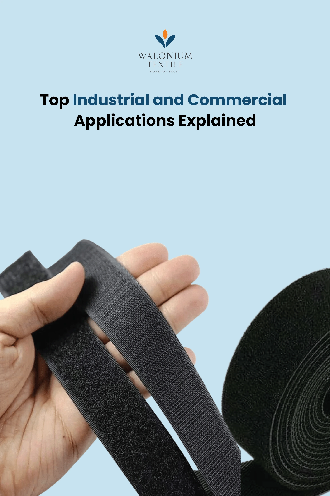

What Is Velcro Used For? Top Industrial and Commercial Applications Explained
Velcro, or hook and loop fasteners, has become an essential component across multiple industries due to its simplicity, reusability, and durability. From apparel and home organisation to heavy-duty industrial and medical applications, Velcro offers a reliable fastening solution that can be used repeatedly without losing strength or performance.
At Walonium Textile, we specialise in manufacturing and exporting premium hook and loop tapes (Velcro) that serve a wide range of B2B clients across PAN India and global markets. With over three years of experience in the textile fastening industry, we’ve seen firsthand how businesses are leveraging Velcro in innovative ways to improve product functionality, design efficiency, and ease of use.
Here’s an overview of what Velcro is used for across different industries and how our high-performance products help meet professional and industrial standards.
Understanding How Velcro Works
Velcro fasteners consist of two components: one strip with tiny hooks and another with soft loops. When pressed together, the hooks catch the loops, forming a secure bond that can be easily detached when needed. This unique design makes Velcro a versatile, reusable, and user-friendly fastening system that suits both light-duty and heavy-duty requirements.
Common Uses of Velcro
1. Clothing and Apparel Industry
Velcro is widely used as areplacement for buttons, snaps, or zippers in fashion and workwear products.
- Applications:Shoes, jackets, gloves, uniforms, sportswear, and children’s wear
- Advantages: Quick fastening, adjustable fit, and easy maintenance
For garment manufacturers and exporters, Walonium Textile offers soft, woven hook and loop tapes ideal for apparel production, ensuring comfort and durability through multiple wash cycles.
2. Home and Interior Applications
In the home improvement and décor sector, Velcro provides a simple and flexible way to organise, mount, and secure household items.
- Applications: Hanging pictures or signage, keeping rugs in place, curtain management, cable organisation, and drawer arrangement
- Advantages:Tool-free installation and residue-free removal
Interior designers, home décor brands, and DIY product manufacturers often prefer adhesive-back hook and loop tapes from Walonium for their clean finish and strong bonding on smooth or textured surfaces.
3. Medical and Healthcare Industry
In healthcare, Velcro’s adjustable nature and soft texture make it a trusted fastening material for patient care and medical equipment.
- Applications: Securing bandages, wound dressings, orthopaedic braces, and wearable health devices
- Advantages: Hygienic, adjustable, and comfortable for patients
Our medical-grade Velcro tapes are designed to meet hospital and laboratory requirements—ensuring skin-safe, non-irritating performance for long-term use.
4. Industrial and Commercial Uses
Velcro plays a critical role in industrial manufacturing, logistics, and commercial displays. It’s valued for itsMreusability and strong holding capacity, making it ideal for high-stress environments
- Applications:Securing tools, bundling cables, fastening components, and assembling display panels or trade show booths
- Advantages:Durable, cost-effective, and easy to reposition
Walonium Textile supplies industrial-strength hook and loop tapes engineered to perform on metal, plastic, wood, and composite surfaces, suitable for warehouses, factories, and retail display setups.
Other Notable Industrial and Professional Uses
1. Military and Tactical Gear
Velcro is heavily used in defense and tactical equipment for its reliability and noise control.
- Applications: Uniform patches, pouches, holsters, and gear attachments
- Advantage: Quick release and high endurance under rugged conditions
Walonium provides molded hook tapes specifically designed for defense and outdoor suppliers, ensuring performance under extreme wear.
2. Aerospace and Aviation
NASA was among the first to adopt Velcro for organizing tools and securing objects in zero gravity—a practice that continues across modern aerospace applications.
- ApplicationsInterior panels, wire management, and component mounting
- Advantage: Lightweight yet strong, reducing complexity in assembly
Our high-tech “mushroom hook” Velcro tapes provide low-profile, high-grip performance for precision industries like aviation and electronics.
3. Outdoor and Marine Equipment
Velcro’swater and UV-resistant variants make it ideal for challenging environments.
- Applications: Securing tarps, nets, gear bags, and boating accessories
- Advantage: Maintains adhesion even in wet or salty conditions
Walonium’s polyester and plastic resin hook and loop tapes are engineered to perform in extreme temperatures and moisture, making them perfect for marine, camping, and industrial outdoor use
4. Emergency and Safety Equipment
Velcro’s ease of use and reliability make it suitable for life-saving tools and emergency response gear.
- Applications: Tourniquets, emergency straps, and quick-release kits
- Advantage: Strong, fast, and dependable fastening in critical conditions
Why B2B Clients Choose Walonium Textile
For more than three years, Walonium Textile has been a trusted manufacturer and global exporter of high-performance hook and loop tapes.
We cater to industries ranging from apparel and automotive to healthcare and defense, providing customized Velcro solutions that meet exact technical and operational standards.
Our competitive advantage lies in:
- Advanced manufacturing and quality testing facilities
- Wide material options: nylon, polyester, and plastic resin-based tapes
- Customised widths, colours, and hook strengths for B2B bulk orders
- Fast, reliable PAN India and international delivery
Conclusion
Velcro is no longer just a household item—it’s an industrial-grade fastening solution used in countless sectors worldwide. From simplifying garment closures to supporting complex aerospace assemblies, Velcro has become an essential material in modern manufacturing and design.
At Walonium Textile, we deliver precision-engineered hook and loop tapes that meet the performance expectations of diverse B2B industries. Whether your business needs standard sew-on tapes, adhesive-back fasteners, or heavy-duty outdoor-grade Velcro, we can manufacture and export the right product for your application.
Partner with Walonium Textile today — your trusted source for premium hook and loop tapes designed for durability, consistency, and global quality standards.